창호종합기계CHANGHO INC
고객지원 사례
055-327-4112
055-327-4112
Customer Case · 2026.09
사용 중인 각도절단기에 맞춰 절단기 다이와 롤러다이를 만들 수 있나요?
CUSTOM CUTTER STAND + ROLLER DIE · DEWALT DWS780 / DWS713 · 4 m · 5 m · 2 m
네, 만들 수 있습니다. 경기도의 한 목공 작업장에서 디월트 각도절단기 DWS780과 DWS713을 함께 사용하고 계셨고, 저희는 이 두 기종에 맞춰 절단기를 올려 고정하는 절단기 다이 2대와 롤러다이 4m · 5m · 2m를 주문 제작해 2026년 9월에 출고했습니다. 절단기는 고객께서 사용하시던 장비라 이번 제작에 포함되지 않았습니다. 롤러다이는 별도 판매 품목이며, 절단기 · 절단기 다이 · 롤러다이는 품목마다 따로 견적합니다.
주문 제작절단기 다이 2대롤러다이 3개
비슷한 구성 문의다른 사례 보기
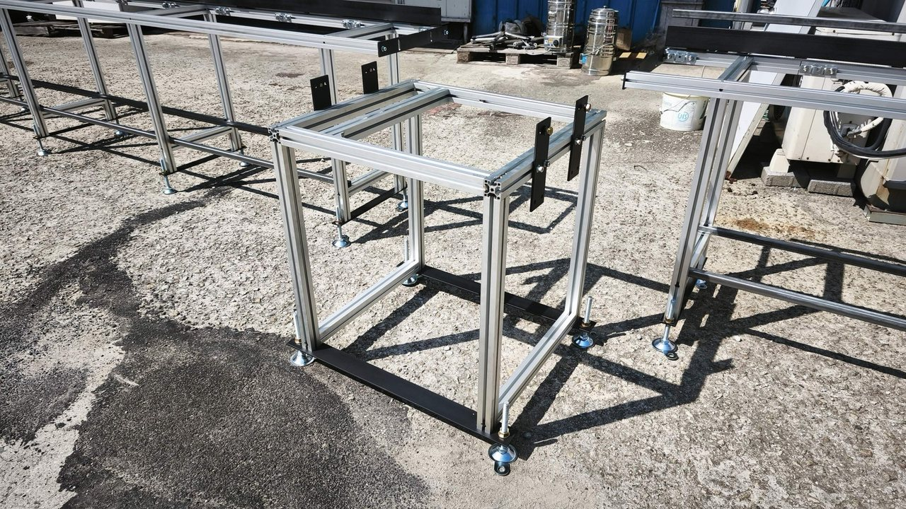
2대
절단기 다이
3개
롤러다이
4·5·2m
롤러다이 길이
2026.09
출고
Site
절단기 두 대를 한 줄 작업대에 놓으려는 현장이었습니다
고객께서 보내 주신 배치도는 왼쪽부터 롤러다이 4m, 절단기 1, 롤러다이 5m, 절단기 2, 롤러다이 2m 순서입니다. 가운데 5m 롤러다이를 두 절단기가 함께 쓰는 구조라, 다섯 구간의 높이가 한 줄로 맞아야 긴 자재를 기울지 않게 받칠 수 있습니다.
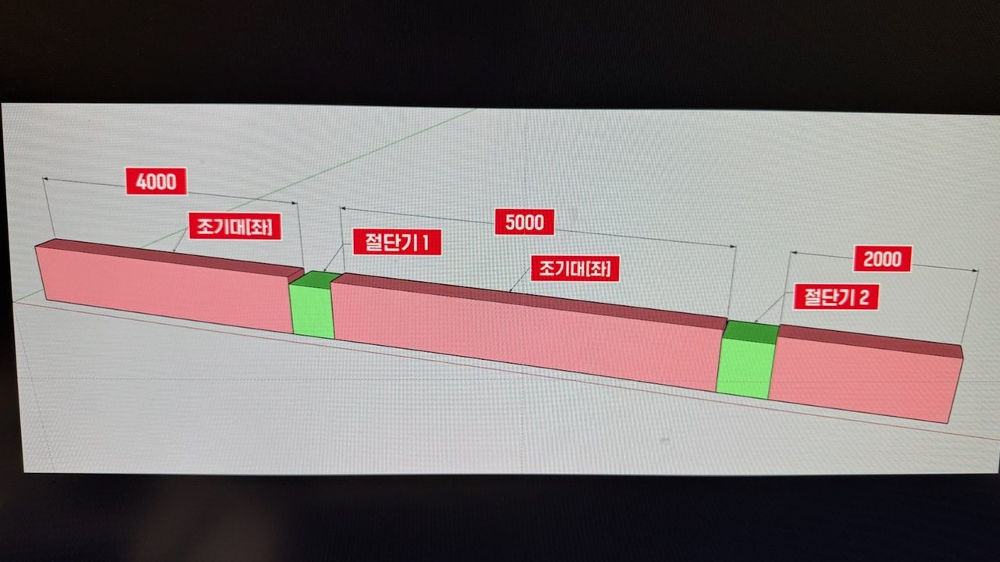
Problem
두 절단기는 밑면 볼트 구멍의 위치와 크기가 달랐습니다
DWS780과 DWS713은 밑면 고정 구멍의 자리와 크기가 서로 다릅니다. 상판 하나로 두 기종을 받치면 한쪽은 볼트를 체결할 수 없습니다. 또 절단기 테이블과 옆 롤러다이의 높이가 어긋나면 긴 자재가 기울어 절단면이 비뚤어집니다. 그래서 상판 구멍 자리와 다이 높이를 기종마다 따로 정해야 했습니다.
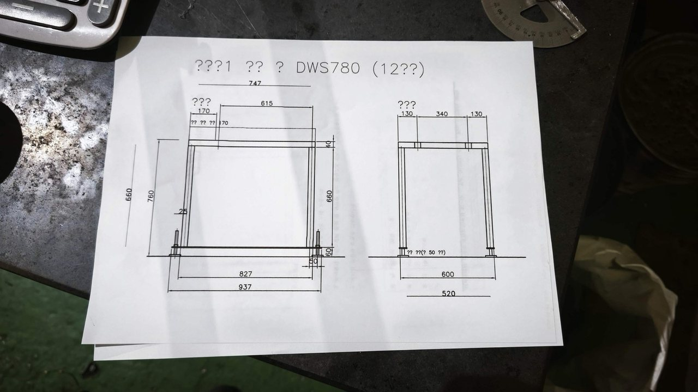
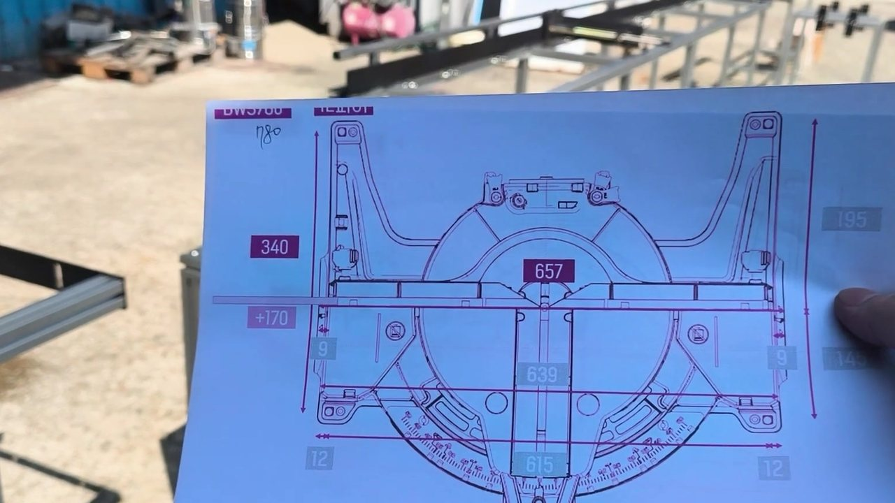
How We Built It
기종별 도면을 그린 뒤 알루미늄 프로파일로 조립했습니다
① 기종별 도면
절단기 밑면 구멍 자리를 도면으로 옮기고, 상판 구멍과 다이 높이를 기종마다 따로 정했습니다.
② 프로파일 가공
알루미늄 프로파일 끝단에 탭을 내고, 절단기를 고정할 볼트 구멍을 뚫었습니다.
③ 볼트 조립
용접 없이 볼트로 체결했습니다. 나중에 길이를 바꾸거나 배치를 옮길 때 풀어서 다시 맞출 수 있습니다.
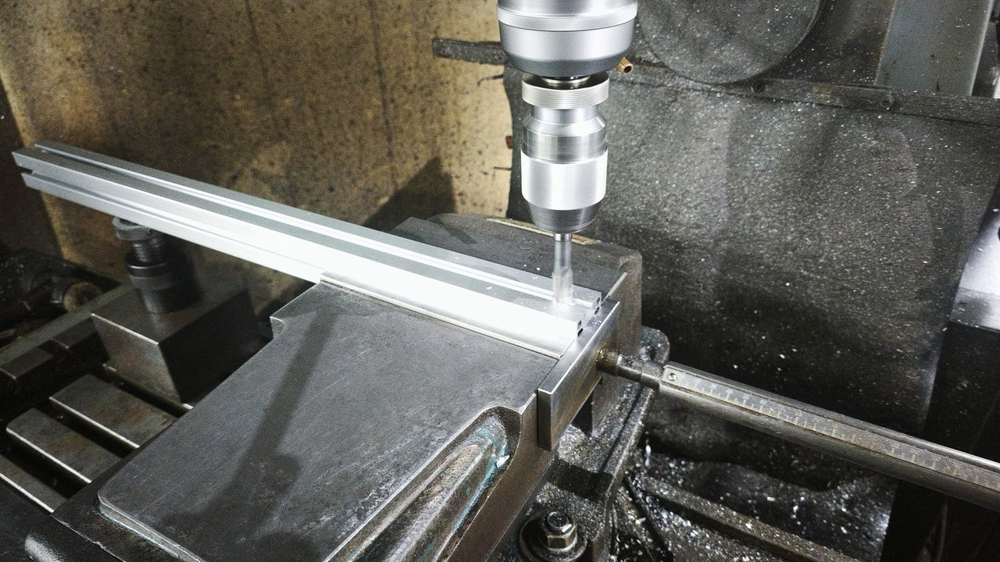
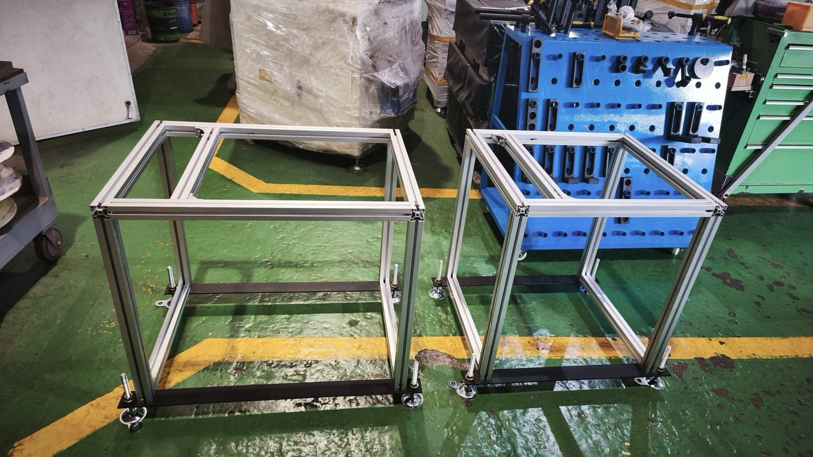
Result
배치도 순서대로 한 줄로 이어 점검한 뒤 출고했습니다
절단기 다이 양쪽에는 롤러다이를 잇는 연결 브래킷을 달았습니다. 롤러다이 레일에는 정해 둔 길이에서 자재가 멈추도록 조기대(길이 멈춤판)를 달아, 같은 치수를 반복해 자를 수 있게 했습니다. 다섯 구간을 공장 마당에 실제 배치대로 늘어놓고 도면의 구멍 자리와 브래킷 체결 상태를 하나씩 맞춰 본 뒤, 롤러는 상자에 따로 포장해 화물차로 출고했습니다. 사진 속 롤러다이는 별도 판매 품목입니다.
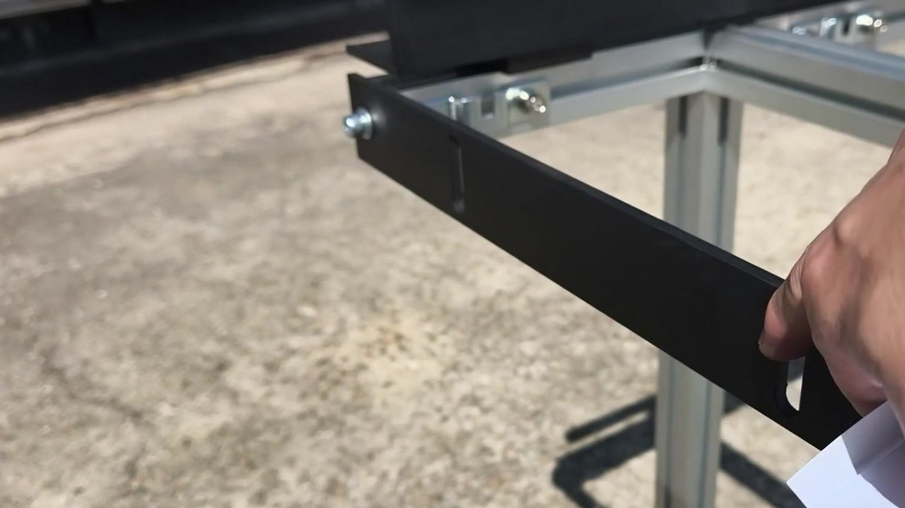
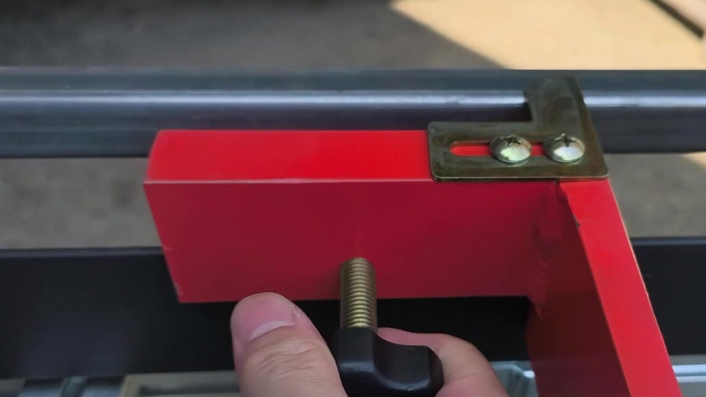
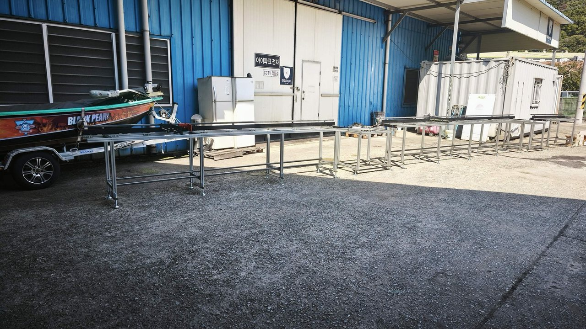
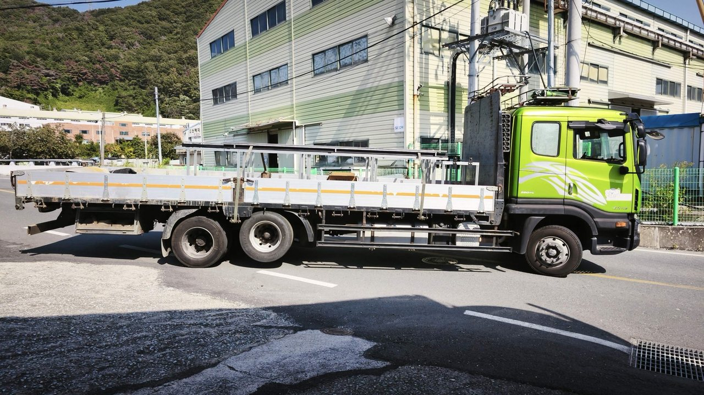
Summary
이번 제작 내용
| 구성 | 절단기 다이 2대(DWS780용 · DWS713용) + 롤러다이 4m · 5m · 2m |
|---|---|
| 절단기 | 포함되지 않음 — 고객 보유 장비 |
| 프레임 | 알루미늄 프로파일 · 볼트 조립(용접 없음) |
| 롤러다이 너비 | 약 500mm |
| 높이 조절 | M16 조절좌 |
| 부속 | 연결 브래킷 · 조기대(길이 멈춤판) |
| 원산지 | 국내산 |
| 현장 | 경기도 · 목공 작업장 |
| 출고 | 2026년 9월 |
Products
이 사례에 쓰인 제품
제품 이름을 누르시면 제원과 구성을 보실 수 있습니다.
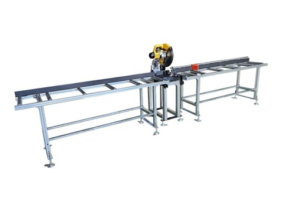
WTM-PKS102
절단기 다이 + 좌우 롤러다이 세트

WTM-RD-XX
주문 길이 알루미늄 롤러다이 · 너비 약 500mm

세트 구성 안내
절단기 + 롤러다이를 함께 고르는 방법
Channels
채널 안내
사용하시는 절단기에 맞춘 다이 · 롤러다이 문의
절단기 모델명과 작업대를 놓을 자리의 길이를 알려 주시면, 기종에 맞는 다이 도면과 롤러다이 길이를 정리해 제안해 드립니다. 절단기, 절단기 다이, 롤러다이는 품목마다 따로 견적해 드립니다.
055-327-4112 대표
010-4465-4112 휴대전화
geonics@hanmail.net 이메일